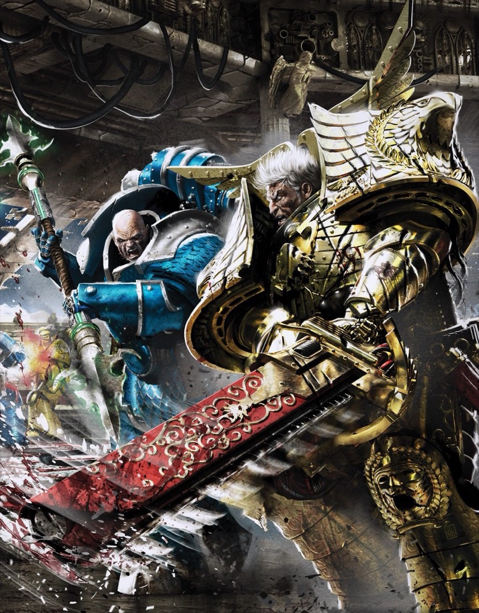

Rogal Dorn
| Rogal Dorn | |
|---|---|
| Primarch of the VII Legion | |
 The Praetorian of Terra before the banner of the Imperial Fists, from a votive painting Artwork © Games Workshop | |
| Primarch of the Imperial Fists | |
| Tenure | 835.M30 – c. 781.M31 (presumed killed) |
| Praetorian of Terra | |
| Tenure | During the Horus Heresy and after; Lord of the Imperial Palace's defence |
| Also known as | Lord of Inwit |
| Allegiance | Imperium of Mankind (loyalist) |
| Legion | VII, the Imperial Fists |
| Homeworld | Inwit |
| Created | c. 792.M30, Terra |
| Discovered | 835.M30, by the Emperor of Mankind |
| Status | Presumed killed in the First Black Crusade, c. 781.M31; disputed |
| Relatives |
|
| Wargear | Auric armour; Storm's Teeth; the Voice of Terra; the Ætos Dios; the Pain Glove |
| Known for | The defence of the Imperial Palace at the Siege of Terra; the Iron Cage; the Hand of Dorn |
Rogal Dorn, called the Praetorian of Terra, was the primarch of the VII Legion, the Imperial Fists. He was the seventh of the twenty primarchs and the master builder, who made the siege defences of the Imperial Palace. His Legion was the Imperium's foremost practitioner of fortress warfare and, in the Horus Heresy, its last line of defence.[1]
Dorn grew to manhood in the fortress-cities of Inwit, and the Emperor found him in 835.M30. In the Great Crusade he served as a general in several wars and as the Emperor's chief engineer. At the end of the crusade the Emperor made him Praetorian of Terra, the commander of the Imperial Palace's defence, and Dorn spent the last years of the crusade fortifying the Palace against an enemy that no one else yet suspected. When the Horus Heresy broke out in 005.M31, he organised the defence of the Sol System and, at the Siege of Terra, held the Palace's walls until the Emperor and Horus met.[1][2]
After the Heresy, Dorn was a grieving, severe and driven man. He accepted the Second Founding only after the battle of the Iron Cage, in which he threw his Legion against an Iron Warriors fortress. The Imperial Fists' tradition holds that he died, long after his brothers, in the First Black Crusade, fighting aboard the Chaos flagship Sword of Sacrilege. Other Imperial sources place his death at different times, and his fate remains disputed.[2][3]
Early life
[edit]Inwit
[edit]The capsule carrying the infant Dorn came to rest on Inwit, a world of mountain strongholds and fortress-cities, in about 792.M30, at the end of the long age of Old Night. Its people had survived the Age of Strife by building walls. Their culture prized endurance, discipline and defence, and the primarch grew up among a people who understood sieges and had given them much thought.[1]
Dorn grew quickly and learned the arts of fortification, stone-working and the defence of walls, in which he excelled. He rose in the service of the Inwit rulers. His upbringing among the fortress-cities left him with a lifelong pride in stone and a preference for defence, and with a certain gloom that his brothers later noted. His courage was never in doubt.[1]
The Emperor
[edit]The Emperor arrived at Inwit in 835.M30 and found the primarch fortifying the cities of his world. Dorn swore loyalty to his father and took command of the VII Legion, the Imperial Fists, the Legion made from his gene-seed.[1]
The Great Crusade
[edit]Iron and stone
[edit]Under Dorn the Imperial Fists were set to the siege and defence of the crusade's hardest strongholds. Their rivals in this art were the Iron Warriors of Perturabo, who held that the best defence was a better offence. The two primarchs were competitive, and their disputes over the best methods of fortress warfare, over credit for victories and over their respective duties became legendary. The Emperor's decision to give Dorn the task of fortifying Terra, rather than Perturabo, was a lasting grievance in the Iron Warriors.[1][2]
The Triumph of Ullanor
[edit]Dorn fought in the Ullanor Crusade and stood with his brothers at the triumph that followed in 000.M31. Horus was named Warmaster. He returned to Terra with the Emperor and was named Praetorian of Terra, charged with building the Palace's defences.[4]
Fortifying the Palace
[edit]Dorn set out to turn the Imperial Palace into a fortress. He ringed it with bastions and thousands of artillery pieces, added steel plating to the towers and walls, and regretted the damage that the work did to the Palace's beauty, which he believed the Emperor had made perfect. Those close to him understood that Dorn had begun to doubt the Imperium's peace.[2][3]

The Horus Heresy
[edit]The news of treachery
[edit]Dorn and his Legion were on their way to Terra in 005.M31 when the Warp storms stranded them. They found the damaged frigate Eisenstein, whose survivors, led by Captain Nathaniel Garro of the Death Guard, brought word of Horus's rebellion and the atrocity on Isstvan III. Dorn did not at first believe Garro, and nearly killed him for slandering the Warmaster. He was convinced by the survivors, including Iacton Qruze and the remembrancer Euphrati Keeler, and sent most of his Legion to the Isstvan system, while he returned to Terra with his veteran companies to prepare the defence.[2]
When the survivors of the Drop Site Massacre arrived at Terra in 006.M31, Dorn and Malcador the Sigillite understood how strong Horus was. Dorn recalled every loyal force to Terra, including Jaghatai Khan, who was told to bring the White Scars home, and Leman Russ, who was to come if he could evade his attackers. Of the loyal Legions, only the Imperial Fists, the White Scars and the Blood Angels reached Terra before the Traitor fleets arrived.[2]
Alpha Legion and the Investiary
[edit]Dorn turned the Sol System into a fortress, and the Alpha Legion, who saw that as a challenge, set about humiliating him. In the Investiary of the Imperial Palace, where statues of the twenty primarchs stood, Alpha Legion agents destroyed the statues of the Traitor primarchs, which had been covered, and left only those of Alpharius and Dorn. It was a message: the Palace's most secure place had been entered. The Sigillite learned of it, and Dorn resolved to deal with the Alpha Legion himself.[3][2]
The Battle of Pluto
[edit]In 010.M31 the Alpha Legion fleet entered the Sol System in the guise of a loyal force and attacked the fortress moon of Hydra, which orbited Pluto and was the Palace's chief monitoring station. A swarm of sleeper agents sowed chaos across the system. Sigismund, First Captain of the Imperial Fists, defended Hydra with thirty ships against a far larger fleet, and was nearly overwhelmed. The Phalanx and Dorn arrived with the Imperial Fists fleet, using the gravity wells of the system to slingshot to Pluto.[2]

Dorn and his huscarls teleported into the chamber where Alpharius fought, and the two primarchs duelled. When Alpharius made to impale Dorn with the Pale Spear, Dorn took the blow on his shoulder to pin him in place, severed his hands with the chainsword Storm's Teeth, and killed him. The Alpha Legion fleet fell back. The Imperial Fists' record holds that this was the end of Alpharius. Another record, preserved by the Ultramarines, has Alpharius killed by Guilliman at Eskrador, a century later, and the Inquisition holds that the twin Omegon had taken his brother's name. The matter is not settled.[2][5]
The Siege of Terra
[edit]
In 014.M31 the Traitor Legions arrived at Terra. Dorn commanded the defence from the Imperial Palace, with the Imperial Fists, the Blood Angels, the White Scars under the Khan outside the walls, and the Adeptus Custodes led by Constantin Valdor. The Palace's walls were battered but held, and the Traitors broke into the outer defences only in places. Malcador the Sigillite, who held the Throne, was killed in the last days. The Emperor, Sanguinius and Dorn then teleported aboard the Warmaster's flagship when Horus dropped its void shields.[6][2]
Warp-twisted teleportation separated the force. Dorn and his best veterans in Terminator armour landed the farthest from Horus' position, and had to fight their way across the length of the Vengeful Spirit, which took them too long. The Imperial Fists tell that one of their Terminators challenged Horus; savants think it was more likely one of the Custodes, and see the story as an attempt to lessen the Legion's guilt. Dorn reached the bridge to find Sanguinius dead, Horus dead and the Emperor dying. The Emperor told him where to take him, and Dorn carried him to the Golden Throne.[6][2][a]
After the Heresy
[edit]Grief and the Second Founding
[edit]After the Emperor's interment Dorn was stricken with grief. He led his Legion on a penitential crusade across the Imperium in the years of the Great Scouring (014–c. 021.M31) and refused, with Leman Russ and Vulkan, to accept the dictates of Roboute Guilliman's Codex Astartes, which would divide the Imperial Fists into Chapters. The Imperial Fists' ship Terrible Angel was fired on by the new Navy for the Legion's supposed heresy, and Imperial civil war seemed near.[7]
Dorn considered the Codex a rebuke and a danger. He accepted it, finally, because he saw what another internal conflict would do to the fragile peace. The Imperial Fists could not be as easily divided as the Ultramarines, since the Legion's loyalty to itself was bred into each Astartes. To resolve this, Dorn meditated for seven days in the Pain Glove, a device that inflicts agony without injury, and saw a vision of the Emperor, who he realised was still watching over him.[7]
The Iron Cage
[edit]The Iron Warriors, who were now Traitors, built a vast fortress at Sebastus IV, called the Iron Cage, and in about 021.M31[b] dared the Imperial Fists to take it. Dorn led his most determined warriors against it in an assault that lasted weeks. The Imperial Fists fought without any plan, only with zeal, and tore through every trap. The Iron Warriors say that the Imperial Fists were crushed, and that Dorn's Legion would have been wiped out if Perturabo had not prolonged Dorn's suffering until the Ultramarines intervened. The Imperial Fists' records tell otherwise, and claim that Dorn's warriors held the field.[7][2]
The Iron Cage ended the Legion. In its aftermath Dorn agreed to the Second Founding, and the Imperial Fists were divided into Chapters. The Imperial Fists' savants hold that Dorn foresaw that many of his zealous warriors would not accept the Legion's dissolution, and gave them an honourable death in the siege. The Chapters that were created include the Imperial Fists, the Crimson Fists and the Black Templars, who descend from the First Captain Sigismund.[7]
Fate
[edit]Dorn was one of the longest-lived of the primarchs. Imperial records say that with every death or disappearance among his brothers he grew more bitter. He opposed the cult of the primarchs, which grew in the later 31st millennium, and declared that the Emperor alone deserved such devotion, since each of his sons had failed him in some way.[1]
The Imperial Fists' tradition holds that Dorn died in 781.M31, in the First Black Crusade led by the returned Abaddon the Despoiler. Seeing that the Chaos fleet was massing, he attacked with three companies of Imperial Fists, boarded and crippled its ships, and turned captured batteries on others. He was cornered on the bridge of the flagship, the Sword of Sacrilege, and none of his company survived to tell the tale. Only his skeletal remains, his armour and his weapons were recovered, and the Imperial Fists keep his skeletal fists in a shrine in the fortress-monastery Phalanx, where they are engraved with the names of every Chapter Master.[2][3]
The record is disputed, and has several versions. The Adeptus Mechanicus notes that the Despoiler class of battleship was not built until the 36th millennium, which suggests that the date, or the ship, is wrong. A Salamanders tradition has the resurrected Vulkan promising, in the 32nd millennium, to speak of a captain of the Imperial Fists to Dorn, as if the primarch lived. The Night Lords' primarch Konrad Curze is reported to have confirmed that Dorn was dead. The Imperial Fists say that whether the hand is Dorn's or not, its meaning is unchanged. The newest Imperial accounts list him as dead or missing, and do not resolve the matter.[2][5]
Character and abilities
[edit]Dorn was grave, proud and uncompromising. He disliked ostentation, and was at his best behind walls, or in a defence in which his stubbornness counted. His brothers found him cold. He was fiercely loyal to the Emperor and, even in grief, to the Imperium. He was impatient with ritual and religion, and did not like to see men worshipped. Dorn's attitude to his own failures was harsh: he took the blame for the Emperor's fall, and wore the Pain Glove for the rest of his life as penance.[3]
As a commander Dorn was a master of siege and defence, with few equals. His fortifications on Terra held against the whole of the Traitor armies. He was a strong fighter, one of the most powerful of the primarchs in single combat. His great fault was an inclination to see a war as a siege, and to expect others to bear the blow.[2]
Wargear
[edit]- Auric armour: baroque artificer power armour of burnished gold and copper, with a red velvet cloak and the unfurled eagle-wing motif, made from the same auric-adamantium alloy as the Emperor's personal armour.[1]
- Storm's Teeth: a huge chainsword made by the weaponmasters of Inwit before the Emperor's arrival, whose teeth can shred metal and stone. It was Dorn's favourite blade.[1]
- Voice of Terra: a tactical bolter in the pattern of the Custodes' weaponry, presented by the Legio Custodes on his appointment as Praetorian of Terra.[1]
- Ætos Dios: a customised Thunderhawk gunship, armed with a turbo-laser and a Titan-grade void shield, built for him by the magos Telluria after attempts on his life.[1]
- Pain Glove: an electrofibre mesh suspended in a shaft, which inflicts the most agonising pain without harm, which he wore for atonement.[7]
- A teleport homer, which allowed his Terminators to teleport to his position.
Legacy
[edit]The Imperial Fists, the Crimson Fists and the Black Templars revere Dorn as their primarch and father, and the Imperial Fists treat the Hand of Dorn as their holiest relic. Their tradition of siege and defence, handed down from Dorn, has led to their reputation as the Imperium's greatest defenders, as at Cadia and the Palace of Terra. The Black Templars, who follow a crusade in the Emperor's name, are descended from the First Captain Sigismund. The Imperial Palace, which Dorn built, still stands, though it has been remodelled many times.[1]
The disappearance of Dorn, and the uncertainty about his death, have given rise to many stories. The Imperial Fists refuse to make light of them, and say that those who ask whether Dorn is dead should ask whether the Emperor is. His loss has not stopped the Chapter from taking part in the Indomitus Crusade, where the Imperial Fists have fought at the Lord Commander's side.[8]
Timeline
[edit]| Date | Event |
|---|---|
| c. 792.M30 | Created on Terra; his capsule comes to rest on Inwit |
| 835.M30 | Found by the Emperor, the seventh primarch returned; takes command of the VII Legion, the Imperial Fists |
| c. 999.M30 – 000.M31 | Fights in the Ullanor Crusade |
| 000.M31 | Returns to Terra with the Emperor and is named Praetorian of Terra; begins fortifying the Imperial Palace |
| 005.M31 | Learns of Horus's treachery from the survivors of the Eisenstein |
| 006.M31 | News of the Drop Site Massacre; recalls loyal forces to Terra |
| 006–014.M31 | The Imperial Fists' blockade of Cthonia |
| 007.M31 | The Imperial Fists' retribution fleet fights the Battle of Phall |
| 010.M31 | Defeats Alpharius at the Battle of Pluto |
| 013–014.M31 | The Solar War and the Siege of Terra; commands the defence of the Palace |
| 014.M31 | Boards the Vengeful Spirit with the Emperor |
| 014–c. 021.M31 | Penitential crusade during the Great Scouring |
| c. 021.M31 | The Iron Cage; accepts the Second Founding[c] |
| c. 781.M31 | Reported killed fighting the First Black Crusade (disputed) |
See also
[edit]Notes
[edit]- ^ The Imperial Fists' tradition, stated in the Legion's own annals, holds that Dorn blamed himself for failing to protect the Emperor. The newest accounts of the siege, from the Custodes' archives, agree that Dorn arrived late but record no fault.
- ^ Date estimated from the sequence of events.
- ^ Date estimated from the sequence of events.
References
[edit]- ^ a b c d e f g h i j k l Abnett, Dan. Horus Rising (novel). Black Library, pp. 37, 108-109, 112-113. Swallow, James. The Flight of the Eisenstein (novel). Black Library, pp. 253, 256, 260, 264-265, 273, 286, 317.
- ^ a b c d e f g h i j k l m n o McNeill, Graham. Mechanicum (novel). Black Library, pp. 286, 290. Swallow, James. Nemesis (novel). Black Library, pp. 50, 155, 384, 389-390.
- ^ a b c d e Thorpe, Gav. Deliverance Lost (novel). Black Library, pp. 94, 110, 138. McNeill, Graham. The Outcast Dead (novel). Black Library, pp. 10-11, 17, 24, 39, 99-100.
- ^ Roberson, Chris. Sons of Dorn (novel). Black Library. The Soul Drinkers (Omnibus Novel), "The Soul Drinkers" (novel) by Ben Counter, Chs. 1, 2, 5, 9, 11-12.
- ^ a b Annandale, David. The Hunt for Vulkan (novel). Black Library, Ch. 8. Codex: Adeptus Astartes - Space Marines (8th Edition), pg. 36. Games Workshop.
- ^ a b The Dark King - The Lightning Tower (Audio Book), by Dan Abnett and Graham McNeill. Watson, Ian. Space Marine (novel). Black Library.
- ^ a b c d e Sanders, Rob. Legion of the Damned (novel). Black Library. McNeill, Graham. Vengeful Spirit (novel). Black Library.
- ^ Thorpe, Gav. The Beast Must Die (novel). Black Library. French, John. The Solar War (novel). Black Library, Limited Edition Artwork.
Further reading
[edit]- Dorn, Rogal (c. 005.M31). "The Lightning Tower", in Proceedings of the Defence of Terra. Imperial Fists Archive, Terra. The Praetorian's own account of the Investiary.
- Records of the Siege of Terra (sealed). Adeptus Custodes Archive, Terra.
- Liber Primarchus (M32, revised M41). Administratum Archive, Terra.